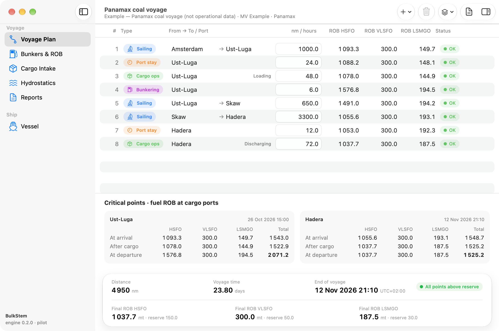
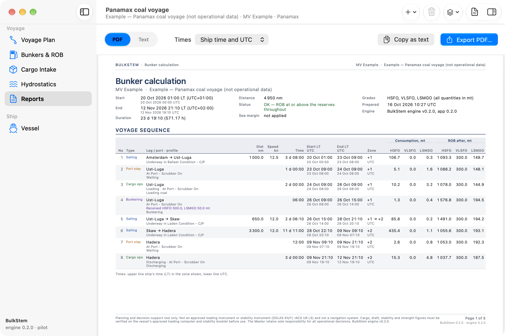
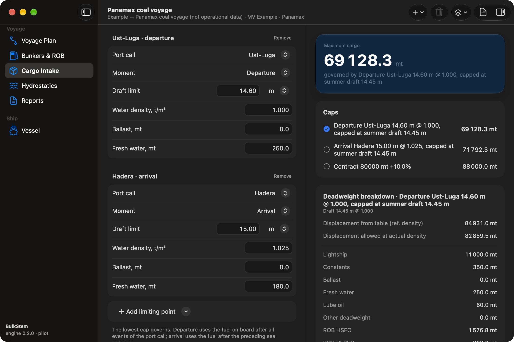

For Masters and Chief Officers of bulk carriers
Voyage fuel and cargo figures you can defend.
BulkStem turns a voyage into an event sequence — sailing, port time, cargo operations, bunkering — and calculates fuel ROB after every event, the critical ROB at the loading port and the maximum cargo intake from your vessel's own hydrostatics: every variable of the voyage in one calculation, ready for the office. Offline and deterministic, with documented, versioned formulas.
macOS 26 or later · Free during the pilot · No account, no internet required

Example — Panamax coal voyage (not operational data)
Distance4 950nm
Voyage time23.80days
| Grade | ROB | Reserve |
|---|---|---|
| HSFO | 1 037.7 | 150.0 |
| VLSFO | 300.0 | 50.0 |
| LSMGO | 187.5 | 30.0 |
Maximum cargo69 128.3mt
Governed by departure Ust-Luga 14.60 m, capped at summer draft 14.45 m.
Reports
The report your office asks for.
Every tonne of fuel on board at the loading port is a tonne of cargo you cannot load, and every tonne below the reserve is a risk you carry. The figures have to be right before the office asks for them.
Operators and charterers ask for a full bunker calculation — distances, speeds, port durations and reserves stated — and the cargo figures with arrival and departure drafts and the deadweight breakdown. BulkStem produces that report from the same figures you see on screen, as an A4 PDF or as plain text for an e-mail.

How it works
-
Enter the vessel once.
Fuel grades, consumption profiles by condition and speed (ballast, laden, in port; charter-party or slow-steaming speed), safety reserves, tank capacities and the hydrostatic table live in a vessel passport that every voyage reuses.
-
Build the voyage as events.
Sailing legs with distance and profile, port activities with duration, cargo operations, bunkering with the quantity received — in the order they happen, with the ship's clock and UTC side by side.
-
Read the figures, then the report.
Hours, ETA and ROB per grade after every event, the reserve status of each row, the critical ROB at the loading port and the maximum cargo intake at each limiting point. Export the office-ready report as PDF or text.

What it calculates
- ROB after every event
- Consumption per fuel grade from the profile's daily rate and the event's hours; bunkers credited at the start of bunkering; reserves checked per grade on every row.
- Critical ROB at the loading port
- The fuel on board at departure from the loading port, after all port events and any bunkering there, which decides how much cargo you can lift.
- Maximum cargo intake
- Displacement at the limiting draft from your vessel's hydrostatic table, corrected for water density, minus lightship, constants, ballast, fresh water, lube oil and fuel on board — at the departure or arrival points you specify, in metres or feet.
- Reserves, checked and stated
- Your safety reserve per fuel grade, from the vessel passport, is checked on every event: the plan shows the status of each row and the report marks every figure below the reserve.
- Several caps side by side
- Draft, contract quantity with tolerance (for example 10 % MOLOO) and stowage factor: the lowest governs, and the report shows all of them.
- Voyage variants
- Keep named variants of a voyage inside one file and switch between them.
- Office-ready reports
- An A4 PDF and a plain-text version that pastes into an e-mail: the voyage sequence with distances, speeds, hours and consumption per grade, bunkers received, totals, critical points, the cargo intake with its deadweight breakdown, assumptions and issues — times in ship's time and UTC.
- Ship time and UTC together
- Every event carries the ship's clock offset; clock changes are set on the event where they happen; nothing shifts silently with the computer's time zone.
Works fully offline. No calculation, file or report depends on the network, and no data leaves your Mac.
No invented numbers. There are no default consumptions, no guessed distances and no silent zeros: missing or invalid input is flagged, never assumed.
Show the formula. The calculation engine is versioned, every formula is documented and tested, and the engine version is printed on every report and saved in every voyage file.
Trust
What BulkStem is, and what it is not.
BulkStem is a planning and decision-support tool. It is not an approved loading instrument or stability instrument (SOLAS XII/11, IACS UR L5) and not a navigation system. Cargo, draft, stability and strength figures must be verified on the vessel's approved loading computer and stability booklet before use. The Master retains sole responsibility for all operational decisions.
Built with an active bulk-carrier Master from his own specification and voyage practice.
Frequently asked questions
Does it need an internet connection?
No. BulkStem works fully offline. The only network use is checking for application updates, which you can trigger yourself.
Which computers does it run on?
A Mac with macOS 26 or later today. A Windows version is planned next, then iPad and iPhone; a browser version for ship PCs is under evaluation.
My Mac runs an older macOS.
BulkStem needs macOS 26 or later. Every Mac with Apple silicon (2020 onward) and the last Intel models — the 16-inch MacBook Pro (2019), the four-port 13-inch MacBook Pro (2020), the iMac (2020) and the Mac Pro (2019) — can update to it free of charge. For older computers and for ship PCs, a browser version is planned.
Can I share a voyage with the office or the relieving Master?
Yes. Send the voyage file — it is self-contained and opens with the same figures on any Mac running BulkStem — or send the PDF or the text report.
Which fuel grades does it handle?
The grades you define in the vessel passport, typically HFO, VLSFO and LSMGO. Every consumption profile has a daily rate per grade, and every ROB, reserve and critical point is shown per grade.
Where is my data stored?
In voyage files on your Mac. A voyage file is self-contained — it carries a copy of the vessel data — so it opens with the same figures on any other Mac running BulkStem.
Can I open my Voyage Fuel Planner v4.8 files?
Yes. Projects and condition files are imported, and BulkStem reports what the old format did not store.
Is it an approved loading instrument?
No. It is a planning tool: the approved loading computer remains the authority for cargo, draft, stability and strength, and ECDIS for navigation.
What does it cost?
Free during the pilot.
Who makes it?
PhoboSys, with the Master who wrote the original specification. Contact: CONTACT_EMAIL.
Download BulkStem for Mac
macOS 26 or later. Signed and notarized. Updates arrive inside the application.
Download for MacVersion and release notes: RELEASE_NOTES_URL